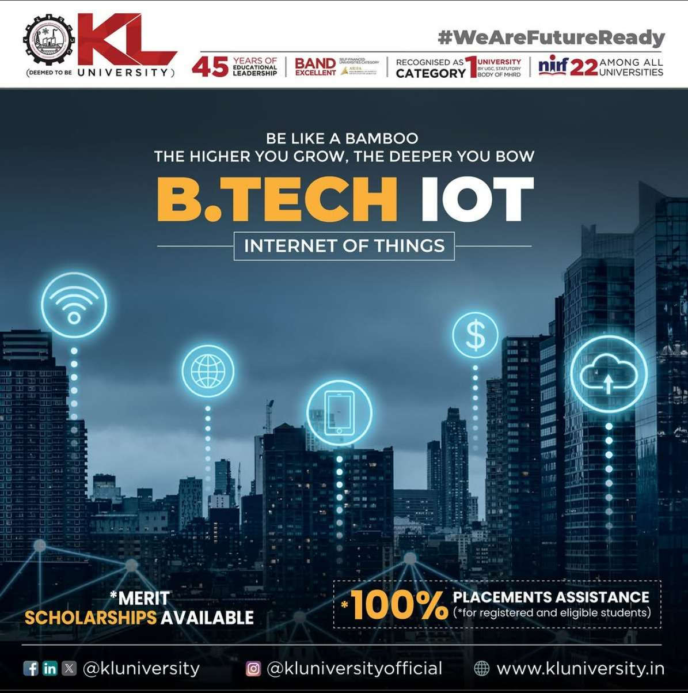

B.Tech in Internet of Things offers a cutting-edge undergraduate program with a flexible, industry-aligned curriculum and forward-thinking teaching methods, tailored to stay ahead of evolving industry trends and workforce demands. Emphasizing practical readiness, the program equips students to seamlessly transition into the IoT sector, where the growing need for intelligent, IoT-driven solutions is expected to generate trillions in opportunities for the IT industry. innovation, learning, and student success. The faculty members of the department have high academic and research credentials and are cordial, providing a very conducive academic environment
